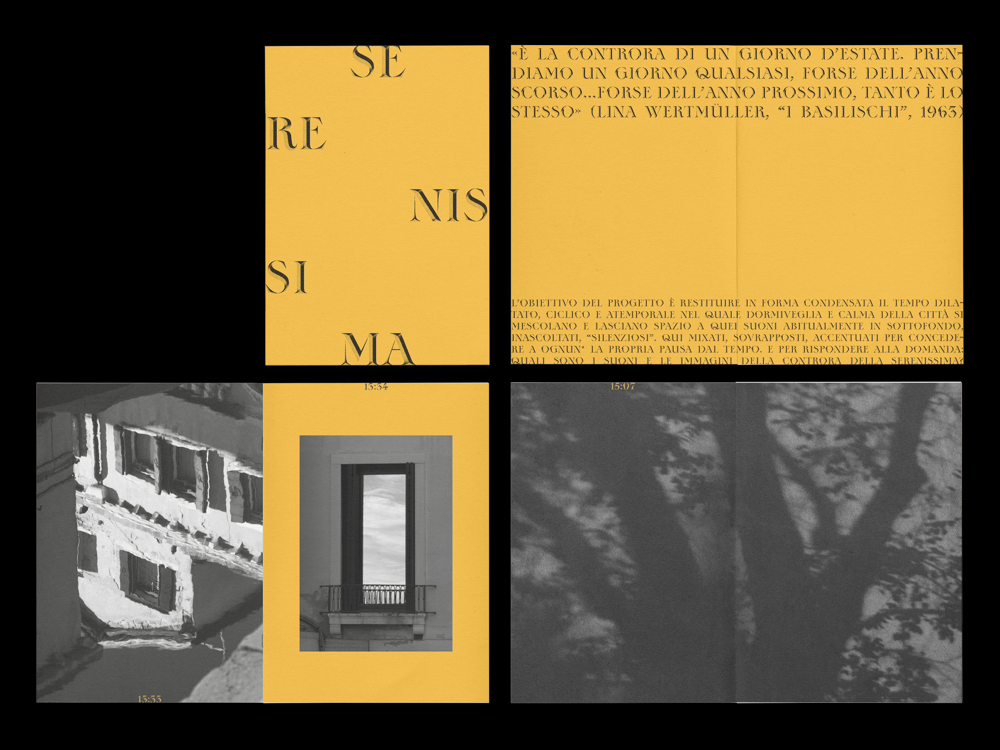
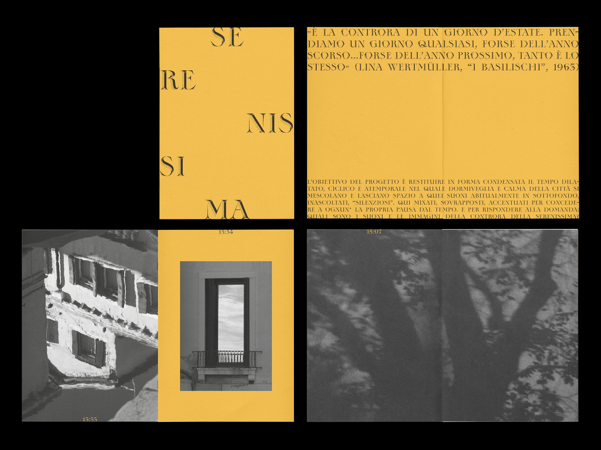

in 「Communication Design」 at Iuav. Previously at PoliBa.
My — always WIP — practice explores typography, information and editorial design and all the ways they interpolate each other with and without the help of coding.

 



Open to work, feel free to contact me via mail to request my complete portfolio and CV.
I’m also on:
→ Instagram;
→ LinkedIn;
→ GitHub;
→ Are.na;
→ Mastodon.